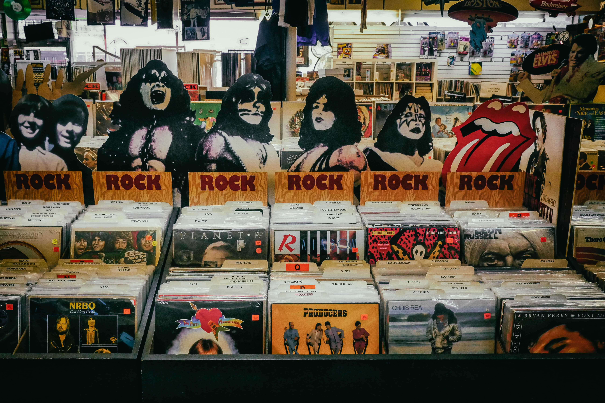

Orígenes del Rock 'N' Roll


El rock and roll como tal, tiene sus orígenes entre 1920 y 1940. En los orígenes del rock and roll existía una combinación de elementos los blues, boogie woogie, jazz y rhythm. El género también estaba influenciado por géneros tradicionales como el Hillbilly, la música folk de Irlanda, la música gospel y la música country. Regresando aún más atrás en el tiempo, se puede trazar el linaje del rock and roll hasta el antiguo distrito Five Points de Nueva York a mediados del siglo XIX, que fue el escenario de la primera fusión entre la música africana fuertemente rítmica y los géneros musicales europeos.